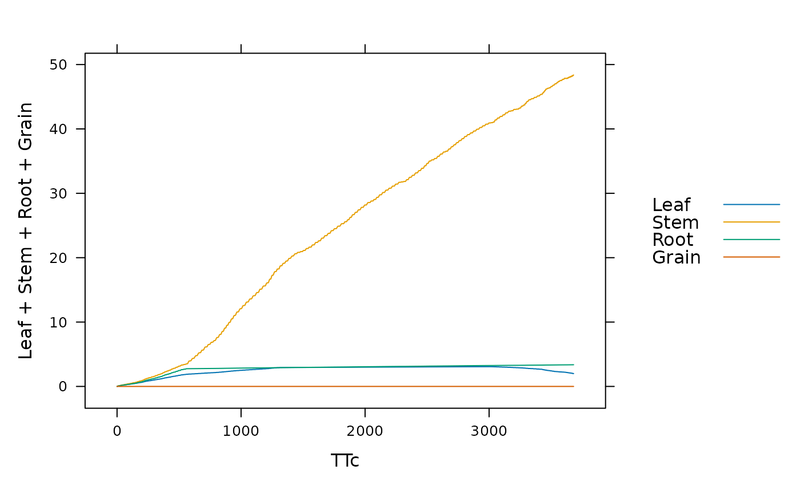

Simulate Crop Growth with BioCro
run_biocro.RdRuns a full crop growth simulation using the BioCro framework
Usage
run_biocro(
initial_values = list(),
parameters = list(),
drivers,
direct_module_names = list(),
differential_module_names = list(),
ode_solver = BioCro::default_ode_solvers$homemade_euler,
verbose = FALSE
)Arguments
- initial_values
A list of named quantities representing the initial values of the differential quantities, i.e., the quantities whose derivatives are calculated by differential modules
- parameters
A list of named quantities that don't change with time; must include a 'timestep' parameter (see `drivers` for more info)
- drivers
A data frame of quantities with rows at equally spaced time intervals specified in the `parameters` as 'timestep'. The drivers must include either (1) 'time' or (2) 'doy' and 'hour' columns. In the latter case, 'time' will be automatically computed from 'doy' and 'hour' using
add_time_to_weather_data, and theBioCro:format_timemodule will be added to the direct modules if it is not already present.- direct_module_names
A character vector or list of the fully-qualified names of the direct modules to use in the system; lists of available modules can be obtained via the
get_all_modulesfunction.- differential_module_names
A character vector or list of the fully-qualified names of the differential modules to use in the system; lists of available modules can be obtained via the
get_all_modulesfunction.- ode_solver
A list specifying details about the numerical ODE solver. The required elements are:
type: A string specifying the name of the algorithm to use; a list of available options can be obtained using theget_all_ode_solversfunction.output_step_size: The output time step size in units of 'timestep'. For example, ifoutput_step_sizeis 0.25 and 'timestep' is 2, the output will have time points spaced by0.25 * 2 = 0.5.adaptive_rel_error_tol: used to set the relative error tolerance for adaptive step size methodsadaptive_abs_error_tol: used to set the absolute error tolerance for adaptive step size methodsadaptive_max_steps: determines how many times an adaptive step size method will attempt to find a new step size before indicating failure
- verbose
A logical variable indicating whether or not to print dynamical system validation information. (More detailed startup information can be obtained with the
validate_dynamical_system_inputsfunction.)
Details
run_biocro is the most important function in the BioCro package. The
input arguments to this function are used to define a dynamical system and
solve for its time evolution during a desired time period. For more details
about how this function operates, see Lochocki et al. (2022)
[doi:10.1093/insilicoplants/diac003
].
When using one of the pre-defined crop growth models, it may be helpful to
use the with command to pass arguments to run_biocro; see the
documentation for crop_model_definitions for more information.
Value
A data frame where each column represents one of the quantities included in the simulation (with the exception of the parameters, since their values are guaranteed to not change with time) and each row represents a time point
Examples
# Example: running a miscanthus simulation using weather data from 2005
result <- run_biocro(
miscanthus_x_giganteus$initial_values,
miscanthus_x_giganteus$parameters,
get_growing_season_climate(weather$'2005'),
miscanthus_x_giganteus$direct_modules,
miscanthus_x_giganteus$differential_modules,
miscanthus_x_giganteus$ode_solver
)
lattice::xyplot(
Leaf + Stem + Root + Grain ~ TTc,
data=result,
type='l',
auto=TRUE
)
